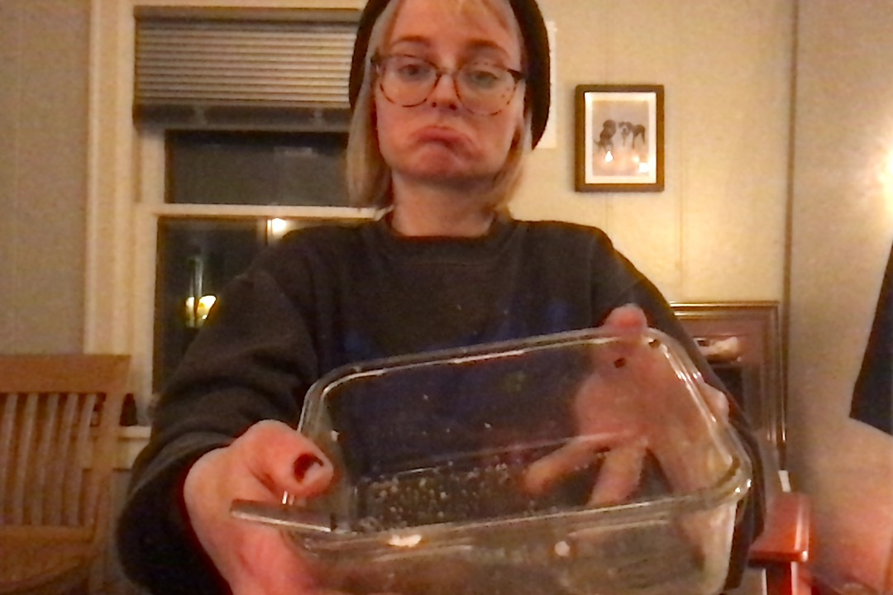

Cucumber Caprese Salad

So good I didn't get a picture before it was gone!
Ingredients
- Cucumber
- Tomato
- Basil
- Mozzerella
- Garbonzo Beans
- Balsamic Vineagar
- Salt and Pepper
Directions
- Chop cucumber, tomato, basil and mozzerella into bite size
pieces
- Open the can of garbanzo beans
- Drain and Rinse the beans. Phoebe says
beans only make you
fart if you don't rinse them
- Mix the salad ingredients in a large bowl
- Dowse in balsamic vinegar and salt to taste
- Enjoy!
A similar recipe, using avacodos instead of cucumbers
Contact Me
Liv's E-mail
The University of Montana
32 Campus Dr
Missoula, MT 59812